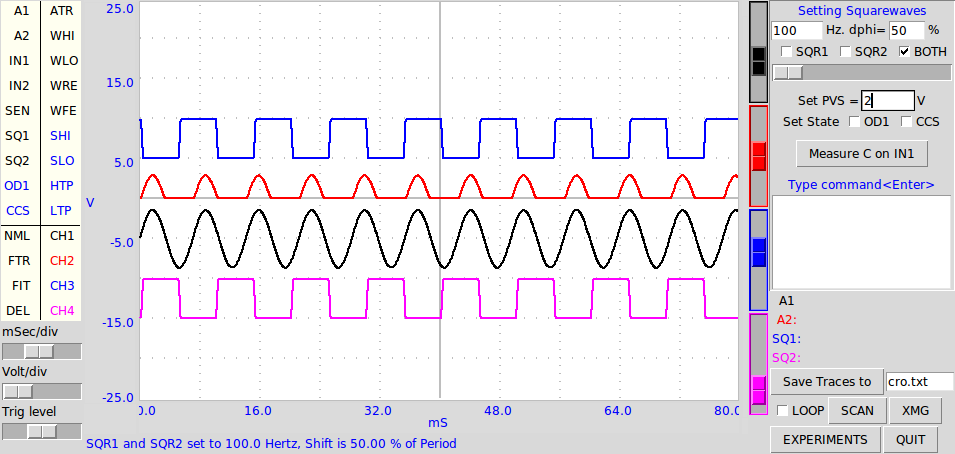

The main GUI of expEYES Junior is an audio
range 4-channel Digital Storage Oscilloscope, with several extra
functions. An oscilloscope displays voltage as a function of time and it
is a very useful tool for to study electrical and electronic circuits.
An example screen is shown below. The EXPERIMENTS button provides a
popup menu of programs required for various experiments.

Videos on using the GUI: video1
The main features of CRO+ are:
- Clicking on any of the Input Source (A1
to SQ2) will read the voltage and display it in the message area.
- Up to 4 analog channels, chosen from the
seven input sources can be plotted at a time.
- Enabling FIT on any channel calculates
the Amplitude and Frequency by fitting the data.
- Channel removed by dragging it to DEL
- The trigger source is selected by
dragging ATR to the desired input
source.
- The capture modifiers like Wait for
Rising Edge can be enabled by dragging them to desired Input Sources.
The selected actions are performed before every capture and display.
Available modifier actions are listed below.
- The sliders on right sides can be used
for adding offset to traces.
- There is a button to measure capacitance
connected to IN1.
- XMG transfers data in an Xmgrace window.
- SQR1, SQR2 or both together with phase
shift can be set from top-right window.
- The Programmable Voltage Source, PVS,
can be set by entering a voltage between 0 and 5 volts.
- Digital Output OD1 and the Constant
Current Source CCS can be controlled using the Checkbuttons.
- Python library functions can be
executed, by typing them inside the command window.
- Can call programs for different
experiments from a popup menu.
ATR -- Analog Trigger, the trace
starts when the voltage is at the selected trigger level.
WHI -- Wait for HIGH on the
selected input
WLO -- Wait for LOW on the
selected input
WRE -- Wait for Rising Edge on
the selected input
WFE -- Wait for Falling Edge on
the selected input
SHI -- Set HIGH on the selected Digital
Output (OD1 or CCS)
SLO -- Set LOW on the selected Digital Output (OD1 or CCS)
HTP -- High True Pulse (0V-5V-0V) on the selected Digital Output (OD1 or
CCS)
LTP -- Low True Pulse (5V-0V-5V) on the selected Digital Output (OD1 or
CCS)
{kind=link}